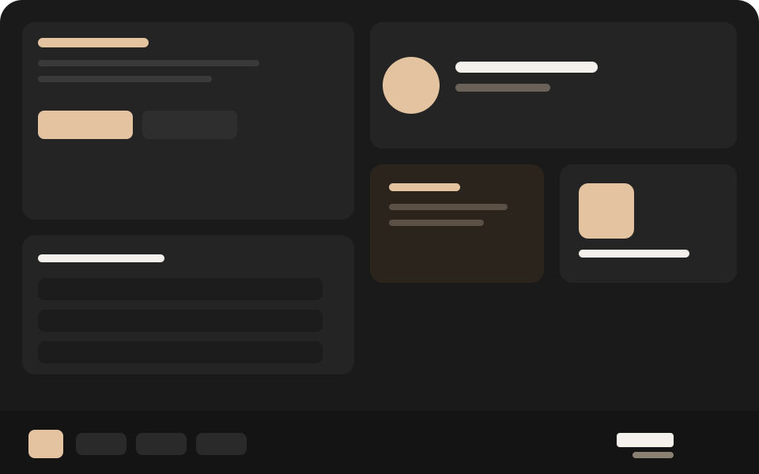

DeepOS
Стол, на котором всё на месте
Тёмная система для работы за этим компьютером: свои часы, свои программы, свой облик. Без лишнего шума на экране.

В этой системе
То, чем пользуются каждый день. Откройте раздел — там живое описание, а не инструкция на десять страниц.
18:00Самара, UTC+4
Время этого компьютера
Часы на панели и большие часы на столе показывают местное время. По умолчанию пояс Самара. Формат 12 или 24 часа и порядок даты меняются вместе с раскладкой.
Время и языкКаталогИгры, офис, графика, сеть
Ставите то, что нужно
В G-Store у каждой программы значок, оценка магазина и своя страница. Установка идёт с этого стола, после одного обновления индекса.
Открыть G-StoreПесокТёмный стол, тёплый акцент
Свой цвет, свой шрифт
Панель, обои, размер часов, анимация и звуки входа. Контрастная тема — чёрный и жёлтый, если так удобнее читать.
Как устроен обликЕщё на этом компьютере
Коротко о том, что уже работает в сборке.